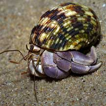
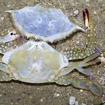
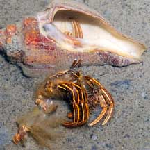

|
|
| crustacea text index | photo index |
| Phylum Arthropoda | Subphylum Crustacea | about moulting |
| Decapods Order Decapoda updated Mar 2020
Delicious Decapods! Decapods include our favourite seafood! Having to personally dismantle some of these creatures to eat them, many of us are more familiar with them than we might imagine. Decapods include crabs, prawns and shrimps, lobsters and hermit crabs. What are decapods? Decapods represent almost one-quarter of all known crustaceans.
Features: 'Deca' means ten and 'poda' means foot. Indeed, members of this Order have 10 leg-like appendages. 5 pairs are usually walking legs while 1-3 may be tipped with claws. The abdomen may also have appendages called pleopods that are used in swimming. Or to generate water currents, particularly important for females that brood eggs or young. The tail is made up of a pair of abdominal appendages called the uropods. The head and thorax are rigidly fused and not separated by a flexible joint. Sometimes, the head and thorax may be covered by a carapace or shell so that these function as a single unit called the cephalothorax. The shell may be hardened with calcium compounds. Most have compound eyes and two pairs of head appendages (insects only have one pair of antennae). The head also has smaller appendages, including the mandibles that crush food and maxillae that generate water currents and help manipulate food. Most have appendages that are branched (biramous). These may function as gills or gill-cleaners. |
|
|
 Porcelain crabs often live with other animals. Changi, Jul 05 |

| True crabs or Brachyurans: There
are about 4,500 known species in nearly 50 families. True crabs generally
have have a reduced abdomen that fits under the cephalothorax resulting
in the typical crab-shape that we are all familiar with. Not all crab-like animals are true crabs. For example, porcelain crabs are Anomurans. |
 Unlike true crabs, hermit crabs have a soft abdomen which is protected by tucking it into an empty snail shell St. John's Island, May 04 |
 Anemone shrimps live in a sea anemone! Pulau Hantu, Apr 04 |
| Why are there so many 'dead' crabs? You might come across what appears to be dead crabs strewn among the seagrass or on the sand bars. These are often not dead crabs but merely their discarded skins! Like other arthropods, crustaceans have a hard exoskeleton (external skeleton) and need to shed their exoskeleton in order to grow bigger. Called moulting, this also allows the animal to regenerate lost limbs. More about moulting. |
 A freshly moulted crab (top right) with the moult (lower left). Sentosa, Jul 04 |
 The moulted exoskeleton 'opened' up. Changi, Jun 05 |
 A hermit crab moult outside the shell with the original inhabitant inside the shell. Changi, Jul 05 |
| Human
uses: Decapods are eaten by people everywhere. But not
all crabs are edible. Some crabs in fact, are highly poisonous and
their toxins are not destroyed even by cooking. Eating such crabs
can kill humans. Crabs may also concentrate unpleasant substances
from the food that they eat. You may get ill eating these crabs. Don't
eat any crabs that you caught yourself in the wild. Status and threats: Sadly, many of our beautiful and fascinating decapods are listed among the endangered animals of Singapore. Like other marine creatures, they are vulnerable to habitat loss due to reclamation or human activities along the coast that pollute the water. They are also vulnerable to trampling by careless visitors and over-collection for food can affect local populations. |
| Decapods
on Singapore shores text index and photo index of crustaceans on this site For decapods listed among the threatened animals of Singapore see crustaceans in general |
Links
|